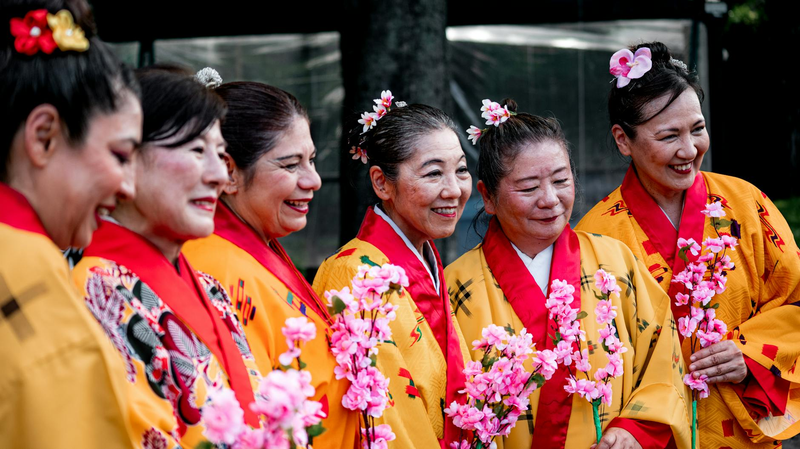
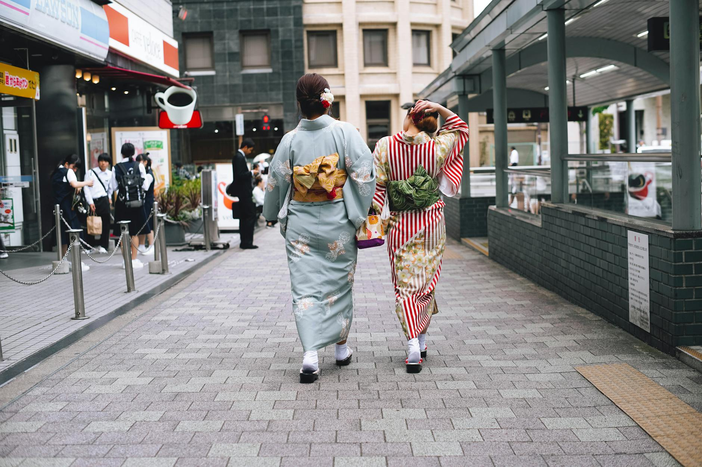
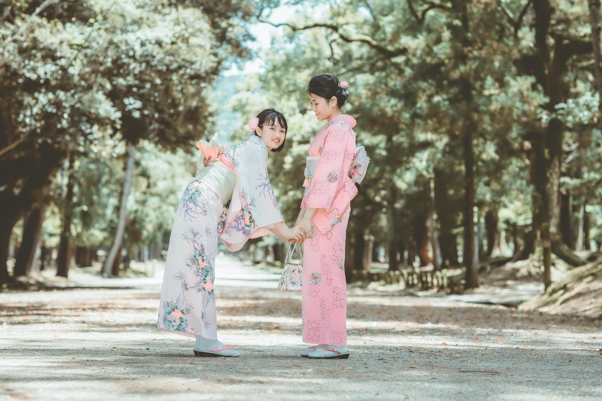

Hướng Dẫn Mới Nhất
Các bài viết chuyên sâu dành cho đàn ông nước ngoài hẹn hò ở Nhật Bản
Cách Cầu Hôn Phụ Nữ Nhật Bản Khi Bạn Là Người Nước Ngoài
Cầu hôn tại Nhật Bản với tư cách là người nước ngoài không chỉ đơn giản là chọn chiếc nhẫn đẹp. Đây là hướng dẫn thực tế để bạn thực hiện điều đó với sự tôn trọng, chân thành và hiểu biết văn hóa.
Doc bai viet →Hôn Nhân Đa Văn Hóa ở Nhật Bản: Những Thách Thức và Cách Vượt Qua
Hôn nhân đa văn hóa ở Nhật Bản có thể rất ý nghĩa, nhưng đi kèm với những thách thức đặc thù về kỳ vọng gia đình, phong cách giao tiếp và thủ tục pháp lý. Đây là những điều bạn cần chuẩn bị.
Doc bai viet →
Cách Gặp Gỡ Phụ Nữ Nhật Bản tại Đền Thờ, Lễ Hội và Sự Kiện Văn Hóa
Đền thờ, lễ hội và các sự kiện văn hóa là những môi trường tự nhiên và thoải mái nhất để gặp gỡ phụ nữ Nhật Bản. Dưới đây là cách tận dụng những cơ hội này một cách tôn trọng.
Doc bai viet →Izakaya Có Phải Là Lựa Chọn Tốt Cho Buổi Hẹn Đầu Tiên Ở Nhật Không?
Izakaya thoải mái, giá cả phải chăng và có mặt khắp nơi — nhưng đây có phải là lựa chọn phù hợp cho buổi hẹn đầu tiên với một cô gái Nhật không? Đây là những gì bạn cần biết.
Doc bai viet →Nhãn Quan Hệ Ở Nhật Bản Hoạt Động Như Thế Nào: Bạn Trai, Bạn Gái và Kokuhaku
Ở Nhật Bản, việc trở thành bạn trai hay bạn gái của ai đó hiếm khi được ngầm hiểu — nó phải được tuyên bố rõ ràng. Đây là những điều bạn cần biết về nhãn quan hệ và văn hóa đằng sau chúng.
Doc bai viet →Bạn Có Thể Đi Tắm Suối Nước Nóng Cùng Bạn Gái Ở Nhật Không?
Hẹn hò ở onsen có thể rất lãng mạn — hoặc rất ngại ngùng — tùy thuộc vào mức độ chuẩn bị của bạn. Đây là tất cả những gì bạn cần biết trước khi đi.
Doc bai viet →Ý Tưởng Hẹn Hò Giáng Sinh ở Nhật Bản: Tại Sao Ngày 24 Tháng 12 Là Đêm Lãng Mạn Nhất Trong Năm
Ở Nhật Bản, Đêm Giáng Sinh không phải là dịp sum họp gia đình — đó là đêm của các cặp đôi. Đây là cách lên kế hoạch cho một đêm lãng mạn hoàn hảo vào ngày 24 tháng 12.
Doc bai viet →Tại Sao Sự Đúng Giờ Lại Quan Trọng Đến Vậy Trong Hẹn Hò Ở Nhật
Ở Nhật, đến muộn khi hẹn hò không chỉ là thô lỗ — nó có thể kết thúc mọi thứ trước khi bắt đầu. Đây là lý do tại sao đồng hồ quan trọng hơn bạn nghĩ.
Doc bai viet →Chuyển Về Ở Chung Tại Nhật Khi Là Người Nước Ngoài: Những Điều Cần Biết
Chuyển về ở chung với người yêu Nhật Bản là một bước lớn—và Nhật Bản có những quy tắc riêng, cả chính thức lẫn không thành văn. Đây là hướng dẫn thực tế dành cho người nước ngoài.
Doc bai viet →Những Ý Tưởng Hẹn Hò Sáng Tạo Ở Osaka Cho Người Nước Ngoài
Năng lượng ấm áp và văn hóa ẩm thực phong phú của Osaka khiến nơi đây trở thành một trong những thành phố tốt nhất của Nhật Bản để có buổi hẹn hò đầu tiên thoải mái và đáng nhớ.
Doc bai viet →Rào Cản Ngôn Ngữ Khi Hẹn Hò Ở Nhật: Thách Thức Thực Tế và Cách Vượt Qua
Rào cản ngôn ngữ là một trong những trở ngại phổ biến nhất với người nước ngoài hẹn hò ở Nhật. Đây là cái nhìn thẳng thắn về cách nó ảnh hưởng đến mối quan hệ—và điều gì thực sự giúp ích.
Doc bai viet →Gaijin Fever ở Nhật: Đó Là Gì và Cách Nhận Biết
Gaijin fever có thật — nhưng sự thu hút chân thật giữa các nền văn hóa cũng có thật. Hãy học cách phân biệt trước khi đầu tư cảm xúc.
Doc bai viet →Hiểu Kỳ Vọng Của Gia Đình Khi Hẹn Hò Với Phụ Nữ Nhật Bản
Hẹn hò với phụ nữ Nhật Bản thường đi kèm với những kỳ vọng từ gia đình mà bạn có thể chưa quen. Đây là những điều bạn cần biết để xây dựng mối quan hệ lâu dài và được tôn trọng.
Doc bai viet →Cách Hẹn Buổi Gặp Thứ Hai ở Nhật (Mà Không Làm Cô Ấy Sợ)
Buổi hẹn đầu tiên diễn ra tốt đẹp — tiếp theo là gì? Hẹn buổi gặp thứ hai ở Nhật đòi hỏi phải đọc được những tín hiệu tinh tế và chọn thời điểm phù hợp. Đây là những điều thực sự hiệu quả.
Doc bai viet →Hiểu Về Ghosting và Sự Im Lặng Đột Ngột Trong Hẹn Hò Tại Nhật
Cô ấy ngừng trả lời mà không có lời giải thích. Tại Nhật, ghosting mang nhiều tầng lớp văn hóa dễ bị hiểu nhầm. Đây là điều thực sự đang xảy ra.
Doc bai viet →
Nên Nói Gì Trong Buổi Hẹn Đầu Với Một Người Phụ Nữ Nhật Bản
Không biết nói gì trong buổi hẹn đầu ở Nhật? Những chủ đề thực tế này sẽ giúp bạn kết nối tự nhiên và để lại ấn tượng tốt.
Doc bai viet →
Fetish Hóa vs. Quan Tâm Thực Sự: Những Gì Phụ Nữ Nhật Bản Thực Sự Trải Qua
Có sự khác biệt thực sự giữa việc bị thu hút bởi ai đó như một con người và việc thu gọn họ thành một khuôn mẫu văn hóa. Hướng dẫn này giúp bạn suy ngẫm thành thật về động cơ của mình và tiếp cận việc hẹn hò ở Nhật Bản với sự chính trực.
Doc bai viet →
Những Quy Tắc Ăn Uống Bạn Phải Biết Khi Hẹn Hò Tại Nhà Hàng Nhật
Ăn uống tại Nhật Bản không chỉ đơn giản là ăn — đó là một nghi thức. Biết trước các quy tắc ngầm trước buổi hẹn hò có thể tạo nên sự khác biệt giữa ấn tượng tốt và một buổi tối gượng gạo.
Doc bai viet →
Những Định Kiến Nguy Hiểm Khi Hẹn Hò Với Phụ Nữ Nhật
Mang theo những định kiến sai lầm về phụ nữ Nhật vào một mối quan hệ là một trong những cách nhanh nhất để đẩy người khác ra xa. Đây là những điều bạn cần thay đổi suy nghĩ trước khi bắt đầu hẹn hò ở Nhật.
Doc bai viet →Cách Bắt Đầu Cuộc Trò Chuyện với Phụ Nữ Nhật Bản Trên Mạng
Tin nhắn đầu tiên của bạn quan trọng hơn bạn nghĩ. Tìm hiểu cách bắt đầu cuộc trò chuyện với phụ nữ Nhật Bản trên mạng một cách chân thành, tôn trọng và đáng để họ trả lời.
Doc bai viet →Cách Xây Dựng Niềm Tin Trong Mối Quan Hệ Với Người Nhật Khi Là Người Nước Ngoài
Trong các mối quan hệ Nhật Bản, niềm tin được xây dựng chậm rãi qua hành động, không phải lời nói. Đây là cách những người đàn ông nước ngoài có thể tạo dựng niềm tin lâu dài.
Doc bai viet →Cách Bày Tỏ Cảm Xúc Trong Mối Quan Hệ Với Người Nhật
Bày tỏ cảm xúc ở Nhật Bản khác với những gì nhiều đàn ông nước ngoài thường làm. Đây là cách thể hiện tình cảm theo cách mà người bạn đời Nhật của bạn sẽ hiểu và trân trọng.
Doc bai viet →Cách Giải Quyết Xung Đột Do Khác Biệt Văn Hóa Trong Mối Quan Hệ ở Nhật
Xung đột văn hóa trong các cặp đôi khác nền là điều bình thường — nhưng không nhất thiết phải kết thúc mối quan hệ. Đây là cách bạn có thể cùng bạn đời người Nhật vượt qua chúng.
Doc bai viet →
Phụ Nữ Nhật Bản Hẹn Hò Khác Biệt Như Thế Nào
Hiểu cách phụ nữ Nhật Bản suy nghĩ về việc hẹn hò có thể giúp bạn tránh hiểu nhầm tín hiệu và xây dựng mối kết nối thực sự.
Doc bai viet →
Cách Thể Hiện Tình Cảm Mà Không Gây Áp Lực Cho Phụ Nữ Nhật Bản
Thể hiện sự quan tâm ở Nhật đòi hỏi sự kiên nhẫn và tinh tế. Khám phá cách cho ai đó biết bạn quan tâm mà không làm họ cảm thấy bị áp lực.
Doc bai viet →
Lừa Đảo Trên App Hẹn Hò Tại Nhật: Điều Người Nước Ngoài Cần Biết
App hẹn hò tại Nhật có thể là nơi tuyệt vời để gặp gỡ — nhưng kẻ lừa đảo biết rằng người nước ngoài là mục tiêu dễ nhắm. Đây là cách để bạn tự bảo vệ mình.
Doc bai viet →
Cách Gặp Gỡ Phụ Nữ Nhật Bản Tại Các Sự Kiện Trao Đổi Ngôn Ngữ
Các sự kiện trao đổi ngôn ngữ tạo ra môi trường tự nhiên, ít áp lực để gặp gỡ phụ nữ Nhật Bản — những người thực sự cởi mở với việc kết nối với người nước ngoài. Đây là cách tận dụng tốt nhất cơ hội này.
Doc bai viet →
Thể Hiện Tình Cảm Nơi Công Cộng ở Nhật Bản: Điều Gì Được Chấp Nhận và Điều Gì Không
Nhật Bản có những quy tắc bất thành văn riêng về việc thể hiện tình cảm nơi công cộng. Hiểu được điều gì được và không được chấp nhận có thể giúp bạn tránh những khoảnh khắc khó xử và thể hiện sự tôn trọng thực sự với người yêu.
Doc bai viet →
Ứng Dụng Hẹn Hò Tốt Nhất Cho Người Nước Ngoài Tại Nhật: So Sánh Pairs, Bumble và Tinder
Không phải tất cả ứng dụng hẹn hò đều hoạt động như nhau với người nước ngoài tại Nhật. Hướng dẫn này phân tích ba nền tảng hàng đầu — Pairs, Bumble và Tinder — để bạn chọn được ứng dụng phù hợp với mục tiêu của mình.
Doc bai viet →
Nghệ Thuật Kokuhaku: Cách Bày Tỏ Tình Cảm ở Nhật Bản
Ở Nhật Bản, các mối quan hệ hiếm khi tự nhiên xảy ra — chúng bắt đầu bằng kokuhaku, một lời tỏ tình thẳng thắn. Hiểu được truyền thống này có thể quyết định cơ hội tình cảm của bạn.
Doc bai viet →
Cách Phục Hồi Sau Buổi Hẹn Đầu Tệ ở Nhật Bản
Buổi hẹn đầu tệ xảy ra với tất cả mọi người. Ở Nhật, cách bạn phản ứng sau đó thường quan trọng hơn bản thân buổi hẹn. Đây là cách phục hồi mà không làm mọi thứ tệ hơn.
Doc bai viet →
Cách Xử Lý Chênh Lệch Tuổi Tác Trong Hẹn Hò Ở Nhật Một Cách Tôn Trọng
Mối quan hệ chênh lệch tuổi tác tồn tại ở Nhật, nhưng kỳ vọng văn hóa định hình cách chúng diễn ra. Đây là cách tiếp cận chúng với sự tôn trọng và thành thật.
Doc bai viet →
Những Địa Điểm Hẹn Hò Công Cộng An Toàn ở Nhật Bản: Nơi Lý Tưởng Cho Buổi Hẹn Đầu và Thứ Hai
Chọn đúng địa điểm cho buổi hẹn đầu ở Nhật Bản sẽ tạo nền tảng cho mọi thứ tiếp theo. Những địa điểm công cộng này thoải mái, dễ trò chuyện và phù hợp văn hóa.
Doc bai viet →
Nên Mặc Gì Khi Hẹn Hò Lần Đầu ở Nhật Bản (Hướng Dẫn cho Nam Giới)
Ấn tượng đầu tiên quan trọng ở mọi nơi, nhưng ở Nhật Bản nó còn mang nhiều trọng lượng hơn. Đây là cách ăn mặc tốt mà không cần nghĩ quá nhiều.
Doc bai viet →
Khi Nào và Làm Thế Nào Để Nói Chuyện Về Quan Hệ Độc Quyền Khi Hẹn Hò ở Nhật
Ở Nhật, việc trở thành người yêu chính thức hiếm khi xảy ra qua một cuộc trò chuyện thẳng thắn. Hiểu được thời điểm và những tín hiệu tinh tế sẽ tạo ra sự khác biệt lớn.
Doc bai viet →
Tần suất nhắn tin nào là bình thường trong giai đoạn hẹn hò sớm với phụ nữ Nhật?
Trong giai đoạn hẹn hò sớm ở Nhật, nhịp nhắn tin thường chậm và cân bằng hơn nhiều người nước ngoài nghĩ. Đây là cách hiểu đúng nhịp của cô ấy và phản hồi phù hợp.
Doc bai viet →
Làm Thế Nào Để Không Bị Coi Là Tay Chơi Trong Văn Hóa Hẹn Hò Nhật Bản
Văn hóa hẹn hò Nhật Bản đề cao sự chân thành hơn hầu hết mọi thứ khác. Đây là cách để ý định của bạn được hiểu là thật lòng — không phải đáng ngờ.
Doc bai viet →
Dấu Hiệu Cô Ấy Lịch Sự Từ Chối Bạn ở Nhật Bản
Văn hóa Nhật Bản đề cao sự hòa thuận hơn là đối đầu trực tiếp. Điều đó có nghĩa là một lời 'không' rõ ràng thường nghe như 'có thể' hoặc im lặng. Đây là cách đọc thông điệp thực sự.
Doc bai viet →
Những Ý Tưởng Hẹn Hò Lần Đầu Nhẹ Nhàng Nhất ở Tokyo
Buổi hẹn đầu tiên ở Tokyo không nhất thiết phải căng thẳng. Những ý tưởng nhẹ nhàng này giúp cả hai cảm thấy thoải mái, duy trì cuộc trò chuyện tự nhiên và tạo nên kết nối thực sự.
Doc bai viet →
Cách chuẩn bị khi gặp bố mẹ bạn gái Nhật Bản của bạn
Gặp bố mẹ là một bước quan trọng. Hãy chuẩn bị bằng lời chào lịch sự, món quà nhỏ và cách trò chuyện điềm tĩnh.
Doc bai viet →
Xây Dựng Mối Quan Hệ Lâu Dài Ở Nhật Với Tư Cách Là Nam Giới Nước Ngoài
Một mối quan hệ lâu dài ở Nhật sẽ bền hơn khi bạn xây dựng niềm tin từ từ, giao tiếp rõ ràng và tôn trọng nhịp độ cũng như mục tiêu tương lai của nhau.
Doc bai viet →
Quy Tắc Tặng Quà Khi Hẹn Hò Với Người Nhật: Nên Tặng Gì Và Tránh Gì
Trong hẹn hò kiểu Nhật, quà tặng nên đơn giản và tinh tế. Hãy biết khi nào nên tặng, tặng gì là phù hợp, và điều gì có thể gây khó xử.
Doc bai viet →
Những Sai Lầm Thường Gặp Của Đàn Ông Nước Ngoài Khi Hẹn Hò Ở Nhật Bản
Tránh các lỗi phổ biến khi hẹn hò ở Nhật—đọc tín hiệu giao tiếp, tôn trọng nhịp độ, ứng xử chuẩn mực và lên kế hoạch chu đáo.
Doc bai viet →
Cách Tạo Hồ Sơ Dating App Hiệu Quả Ở Nhật (dành cho đàn ông nước ngoài)
Tạo hồ sơ ấm áp, đáng tin và phù hợp văn hóa—không phô trương. Mẹo về ảnh, bio, thông tin và an toàn, dành riêng cho bối cảnh Nhật Bản.
Doc bai viet →
Những Dấu Hiệu Cảnh Báo Khi Hẹn Hò Ở Nhật Bản
Hiểu rõ khác biệt văn hóa so với red flag thực sự tại Nhật—cùng các bước cụ thể để an toàn, thiết lập ranh giới và hẹn hò tôn trọng.
Doc bai viet →
Cách Đọc Tín Hiệu Muốn Hẹn Lần Hai từ Phụ Nữ Nhật
Buổi hẹn thứ hai thường thể hiện qua sự thoải mái, nhất quán và hành động tiếp nối. Đây là cách nhận biết mà không tự đoán quá nhiều.
Doc bai viet →
Ai Trả Tiền Khi Hẹn Hò ở Nhật? Cách Xử Lý Hóa Đơn Một Cách Lịch Sự
Việc trả tiền khi hẹn hò ở Nhật có những quy tắc ngầm riêng. Đây là những điều bạn cần biết để xử lý tình huống này một cách tự nhiên.
Doc bai viet →
Những Quy Tắc Nhắn Tin LINE Hiệu Quả Trong Văn Hóa Hẹn Hò Nhật Bản
LINE là nhịp đập trong giao tiếp hẹn hò tại Nhật. Biết khi nào nên trả lời, gửi gì và cách đọc hiểu sự im lặng có thể tạo nên hoặc phá vỡ một mối quan hệ đang nảy nở.
Doc bai viet →
Cách Hỏi Hẹn Hò Một Người Phụ Nữ Nhật Bản Mà Không Gây Áp Lực
Hỏi hẹn hò ở Nhật là một nghệ thuật tinh tế. Đây là cách mời một người phụ nữ Nhật đi chơi theo cách tự nhiên, tôn trọng và thực sự thu hút.
Doc bai viet →
Phép Tắc Hẹn Hò Nhật Bản cho Người Nước Ngoài: Những Điều Bạn Cần Biết
Nắm vững các quy tắc không nói ra khi hẹn hò ở Nhật Bản — từ đúng giờ và tặng quà đến trả hóa đơn và hiểu giao tiếp gián tiếp.
Đọc bài viết →
Hiểu Văn Hóa Hẹn Hò Nhật Bản: Hướng Dẫn Toàn Diện cho Nam Giới Nước Ngoài
Tất cả những gì bạn cần biết về cách phụ nữ Nhật tiếp cận hẹn hò và mối quan hệ, và điều gì làm cho văn hóa hẹn hò của Nhật khác biệt.
Đọc bài viết →
Gặp Gỡ Phụ Nữ Nhật ở Đâu: Ứng Dụng, Địa Điểm và Sự Kiện
Những lựa chọn thực tế nhất cho đàn ông nước ngoài ở Nhật — từ ứng dụng hẹn hò và trao đổi ngôn ngữ đến lớp học sở thích, quán bar và cuộc sống hàng ngày.
Đọc bài viết →
Hiểu Phong Cách Giao Tiếp của Phụ Nữ Nhật: Đọc Vị Những Điều Không Nói
Cách đọc tín hiệu gián tiếp, "có" thực sự có nghĩa gì, mẫu nhắn tin LINE, vai trò của sự im lặng và cách bày tỏ sự quan tâm của bạn một cách rõ ràng.
Đọc bài viết →